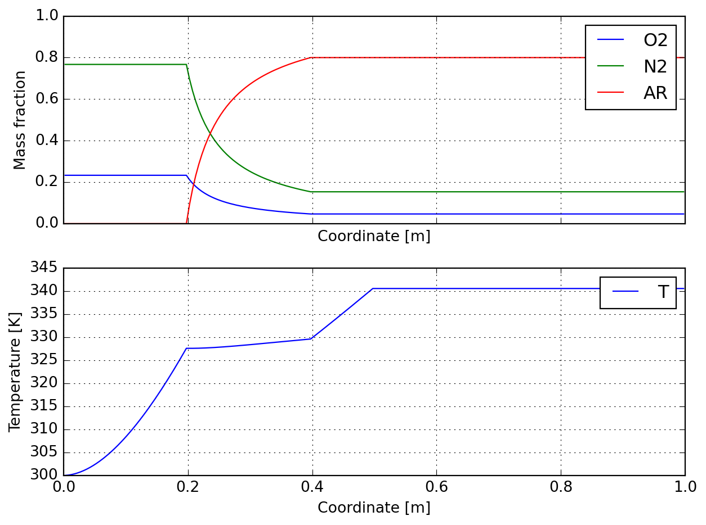
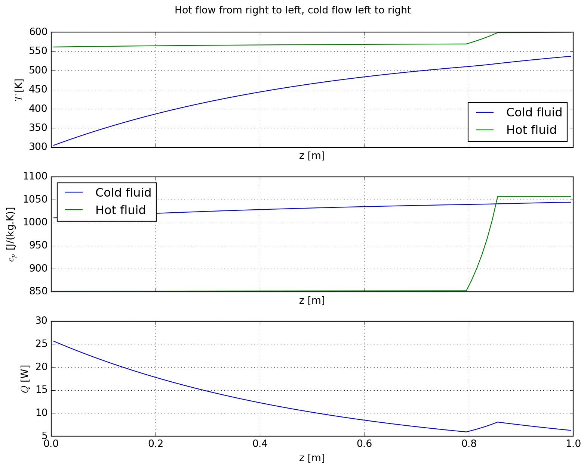
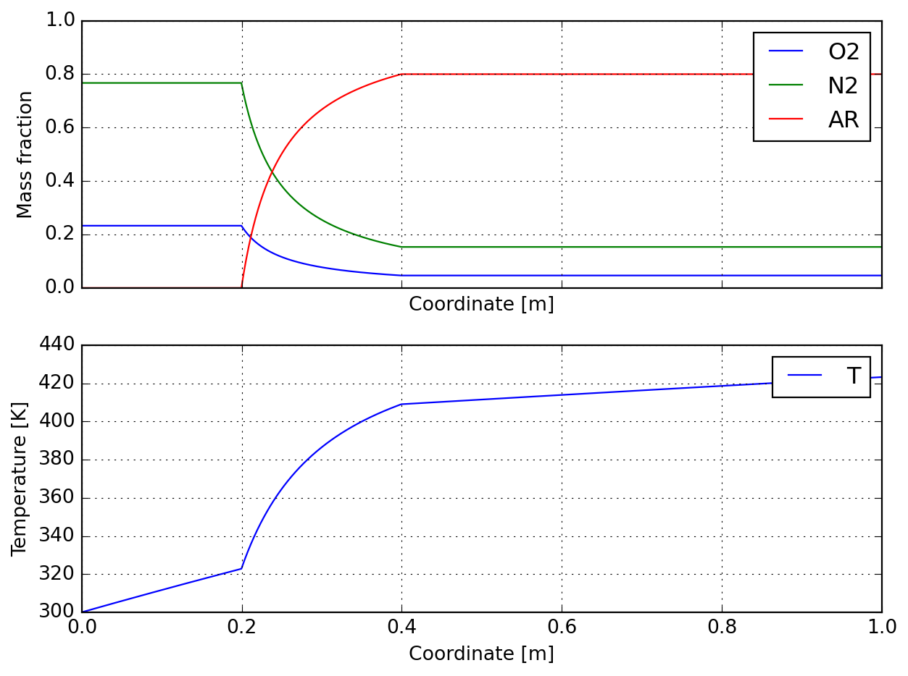
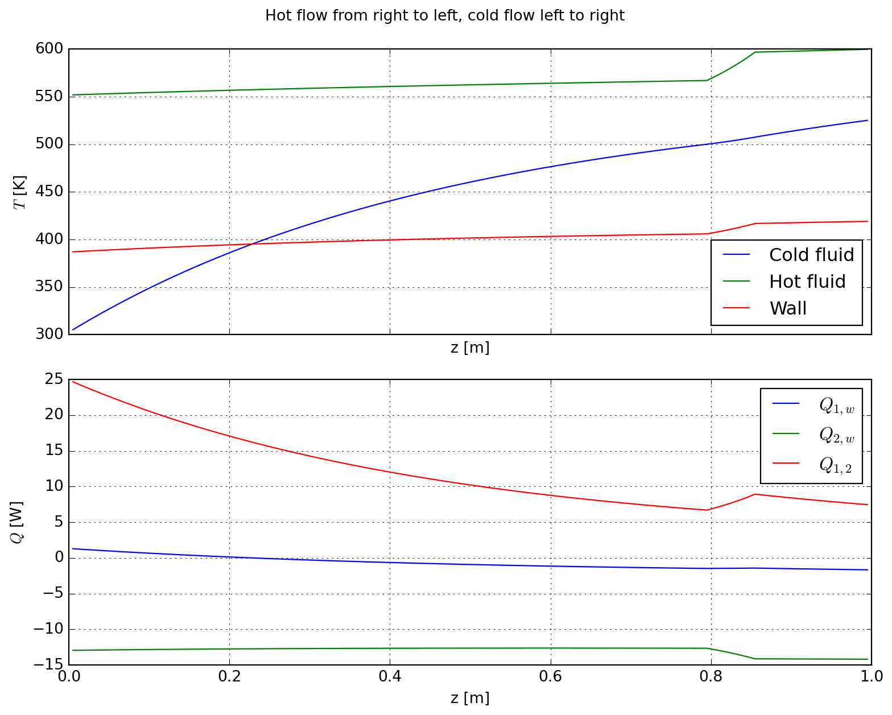

|----------------------|-----|---------------|
| Total mass flow rate | g/s | +2.500000e+02 |
| Total external power | W | +6.035993e+03 |
| Final temperature | K | +3.404046e+02 |8 Counter-current PFR
Warning
Work in progress!
8.1 Introduction
The goal of this tutorial is to discuss a sequence of increasingly complex plug-flow reactor (PFR) models. These are all built upon PlugFlowChainCantera which approximates a PFR as a cascade of perfect-stirred reactors (PSR), as illustrated here. Care must be taken when using such an approach because this zero-dimensional modeling does not formally represent a PFR, but approaches one - so grid convergence studies might be required to validate a model, what is beyond our scope here (and has been done during the conception of this report), which limits itself to studying the coupling of reactors. Nonetheless, this representation proves very interesting when assembling complex systems as it remains modular, allowing for extensibility of models.
In what follows we will be guided through the following models:
A single PFR with possibility of distributed mass sources along its length; this case is often encountered in industry when modeling reactors coupled through a permeable membrane, or in a rotary kiln, where solids may eventually release gases, what is especially important in the field of biomatter gaseification.
Next we will couple a pair of reactors as conceived in the first example, which will be allowed to exchange energy through a pseudo-convective model; there is no major difficulty at this point as the coupling can be stabilized through a relaxation routine. We investigate how the ordering of reactor solution affects convergence rate.
At the last level of complexity studied here, we add a shared common wall around the pair of reactors of the previous step; one might argue that such a system would require two wall temperatures to be described at steady state; here we will assume that this wall is rotating around the pair of reactors in such a way that it remains in contact with a reactor during part of a cycle, and a statistically significant mean temperature is solely used as a process measurable.
Because writting long classes is not didatic for the purposes of a tutorial, we will use a semi-object-oriented programming approach here. That means, there will be minimal classes just holding the basic elements representing the state of a problem, and functions that resemble class methods (receiving the class instance as first argument) to perform the required operations.
Below we start by importing all required tools at once:
Because some cells take some time to execute, during development you can set this to "true" so that they are not run. You can recognize these cells by the presence of magic %%skipper. Setting this to "false" will not skip the cells (this is the logic of the booleans here, we are saying true to skip, not true to execute!).
8.3 Single plug-flow reactor
For the single reactor ReactorModel we write a simple wrapper around PlugFlowChainCantera; this model holds an instance of a solution object conceived with the same mechanism as provided to the PFR, and a simple source structure for the distributed source terms.
Both the solution and source are used in add_source to inject a mass flow rate mdot at temperature T, and composition X (given in mole fractions) at a set of cell indices where along the reactor. We will see later how discretization is performed and thus how to link where to an actual axial coordinate along the reactor.
The underlining PFR model has already its own solution method (which is actually called update) that seeks a steady state for the reactor given a certaing source; sometimes it fail to converge and multiple calls may be required to find the steady state of a reactor. In solve_reactor below we wrap the aforementioned method and add some reporting.
8.3.1 Example - single PFR simulation
As this first case is already fully supported by the underlining library class, we are ready to solve a first example problem. Comments are provided in the function sample_single to guide you through the setup. A distributed power supply is added to the reactor as an analytical function as:
\[ Q(z) = \begin{cases} A \left[1 - \exp\left(-\dfrac{z}{z_0}\right)\right] & z < \dfrac{L}{2}\\[12pt] 0 & \text{otherwise} \end{cases} \]
This is arbitrarily parametrized and is intended just to show that accessing model.source.Q allows to provide any heat source function to a reactor.
We said no convergence study was going to be performed; that was a lie. Below we inspect the evolution of final temperature in terms of reactor cell length in range \(l\in[0.001;0.1]\) m. Solution quickly approaches 340.6 K, and for practical purposes a discretization of 1 cm seems a good compromise between execution time and accuracy. Also notice that total supplied power may depend on discretization because of how it is provided.
|----------------------|-----|---------------|
| Total mass flow rate | g/s | +2.500000e+02 |
| Total external power | W | +6.000357e+03 |
| Final temperature | K | +3.405258e+02 |Below we show the report of first solution, which here is no better than an initial guess; sequential solution of reactor towards steady state is recommended in practice.
|----------------------|-----|---------------|
| Total mass flow rate | g/s | +2.500000e+02 |
| Total external power | W | +6.000085e+03 |
| Final temperature | K | +3.395247e+02 |
|----------------------|-----|---------------|
| Total mass flow rate | g/s | +2.500000e+02 |
| Total external power | W | +6.000085e+03 |
| Final temperature | K | +3.405501e+02 |Finally we illustate the composition and temperature profiles induced by the simultaneous mass and heat transfer:

You can also access the data in base reactor for post-processing as desired:
| 0 | 1 | 2 | 3 | 4 | |
|---|---|---|---|---|---|
| z_cell | 0.002500 | 0.007500 | 0.012500 | 0.017500 | 0.022500 |
| V_cell | 0.000039 | 0.000039 | 0.000039 | 0.000039 | 0.000039 |
| Q_cell | 1.177767 | 3.489592 | 5.744338 | 7.943414 | 10.088195 |
| m_cell | 0.000046 | 0.000046 | 0.000046 | 0.000046 | 0.000046 |
| mdot_cell | 0.050000 | 0.050000 | 0.050000 | 0.050000 | 0.050000 |
| T | 300.023321 | 300.092416 | 300.206156 | 300.363436 | 300.563179 |
| density | 1.171880 | 1.171610 | 1.171166 | 1.170553 | 1.169775 |
| Y_O2 | 0.232909 | 0.232909 | 0.232909 | 0.232909 | 0.232909 |
| Y_N2 | 0.767091 | 0.767091 | 0.767091 | 0.767091 | 0.767091 |
| Y_AR | 0.000000 | 0.000000 | 0.000000 | 0.000000 | 0.000000 |
8.4 Counter-current flow reactors
The tooling required to compute a pair of reactors is already provided by ReactorModel; all we have to do is wrap a pair of reactors in CounterCurrentReactors. For convenience we store a copy of the axial coordinate (which is the same for both reactors). Notice here the introduction of U, a global heat transfer coefficient between phases, Q, the associated heat flux, and a relaxation manager.
One cannot compute heat fluxes between reactors before having an initial temperature profile established (see it as an initial guess). Function initialize is provided for that end and must be called after mass flows have been setup.
There are two ways one can solve the relaxation problem here, each with its strengths and weaknesses; one could simply calculate calculate the flux, apply it to both reactors, and solve (iter_direct) or compose a series of flux and solution calculations (iter_alternate). When initial guess is not good enough, the alternating approach tends to deliver results in a more reliable fashion (because it is compatible with high relaxation factors), but it is slower. On the other hand, direct solution may converge faster as solution is already relaxed.
IMPORTANT: notice here that we get the reverse of T2 to compute flux (as the reactors are in counter-current) and then model.Q is reversed againt to set heat flux to reactor 2. This class could easily be generalized by adding a flag on whether temperature and flux should be treated as is (co-current) or reversed.
Based on the previous discussion, a mixed approach can be proposed: relax the problem with the alternating solution and move to direct one after a certain criteria or maximum number of iterations has been achieved. This is emulated in solve_pair provided below.
A simple standard ploting function is provided for the counter-current reactor pair:
8.4.1 Example - pair of coupled PFR
This second example replaces the user-defined heat flow function by a convective heat exchange through a fin separating the reactions; this is modeled through a heat transfer coefficient h which is made constant here for illustration purposes only. To test the robustness of the approach, a relativelly high dilution flow is applied to a concentrated region in reactor 2 (hot stream).
After building the reactor pair, inlet and distributed conditions and the reactors are initialized, .i.e. solved individually, before iterative solution is performed. The user may require a final solution step for printing reactor quantities in a table.
For low relaxation values (\(\alpha<0.5\)), both methods may eventually converge under the same number of iterations.
|----------------------|-----|---------------|
| Total mass flow rate | g/s | +5.000000e+00 |
| Total external power | W | +1.216871e+03 |
| Final temperature | K | +5.372994e+02 |
|----------------------|-----|---------------|
| Total mass flow rate | g/s | +1.600000e+02 |
| Total external power | W | -1.216871e+03 |
| Final temperature | K | +5.615588e+02 |Refining the grid for the present case has an impact of a few degrees over final solution (but takes much longer to solve), as illustrated below. Below 2 mm there is little change in the final solution and this value is a practical limit for grid refinement here.
Finally we display the results; for the hot stream we observe a sharp decrease in temperature (and associated specific heat capacity) due to argon dilution. Cold stream progressivelly heats up along the channel length as expected.

8.5 Adding losses to the environment
So far we have developed the ideas required to reach the final goal of conceiving a fully coupled system with a pair of reactors and walls. Again we proceed with a wrapper class which countains our problem variables, but in this case we fully develop it as a single block. Also, this time documentation is provided in the class itself as that seems clearer to the author in this case, and provides some closure to the study.
The main increment in problem solution here is the extra step of solving for the wall temperature, which can be found from the global flux definition:
\[ \dot{Q}_{w} = \dfrac{T_w - T_e}{R_{tot}} \quad\text{where}\quad R_{tot} = \dfrac{1}{hA}+\dfrac{1}{2\pi{}lk}\log\dfrac{R_{ext}}{R_{int}} \]
We make use of the main takes of the previous sections, which have shown that alternating reactor solution order is not always an advantage; here the problem has been programmed to use direct solution. Relaxation is applied to reactor fluxes, but not to wall flux, which is computed from a balance of the relaxed quantities for the sake of energy conservation.
8.5.1 Example - environment coupling
|----------------------|-----|---------------|
| Total mass flow rate | g/s | +5.000000e+00 |
| Total external power | W | +1.003972e+03 |
| Final temperature | K | +4.963894e+02 |
|----------------------|-----|---------------|
| Total mass flow rate | g/s | +3.000000e+02 |
| Total external power | W | -2.210504e+03 |
| Final temperature | K | +5.216989e+02 ||----------------------|-----|---------------|
| Total mass flow rate | g/s | +5.000000e+00 |
| Total external power | W | +1.153462e+03 |
| Final temperature | K | +5.251459e+02 |
|----------------------|-----|---------------|
| Total mass flow rate | g/s | +1.600000e+02 |
| Total external power | W | -2.516963e+03 |
| Final temperature | K | +5.519201e+02 |
8.6 Registering flow for a single reactor
Below we develop further the idea into registering heat flows as an alternative to relaxation. The method may prove useful because heat flows are computed from current state of the reactors instead of an external guess.
8.6.1 Example - prototype with a single reactor
|----------------------|-----|---------------|
| Total mass flow rate | g/s | +2.500000e+02 |
| Total external power | W | +4.237303e+03 |
| Final temperature | K | +4.232112e+02 |
8.7 Registering flow for a pair of reactors
As a last level of improvement, we generalize the approach for a pair of reactors. After some experimentation it was concluded that falling back to the alternating approach with intermediate wall solution lead to the best performance, probably because of decreased system stifness. Relaxing the wall heat flow allows for faster convergence.
8.7.1 Example - extension to coupled system
|----------------------|-----|---------------|
| Total mass flow rate | g/s | +5.000000e+00 |
| Total external power | W | +1.153462e+03 |
| Final temperature | K | +5.251459e+02 |
|----------------------|-----|---------------|
| Total mass flow rate | g/s | +1.600000e+02 |
| Total external power | W | -2.516963e+03 |
| Final temperature | K | +5.519201e+02 |
CPU times: total: 15.8 s
Wall time: 15.8 s|----------------------|-----|---------------|
| Total mass flow rate | g/s | +5.000000e+00 |
| Total external power | W | +1.153462e+03 |
| Final temperature | K | +5.251459e+02 |
|----------------------|-----|---------------|
| Total mass flow rate | g/s | +1.600000e+02 |
| Total external power | W | -2.516963e+03 |
| Final temperature | K | +5.519201e+02 |
CPU times: total: 17 s
Wall time: 17 s
|----------------------|-----|---------------|
| Total mass flow rate | g/s | +5.000000e+00 |
| Total external power | W | +1.153462e+03 |
| Final temperature | K | +5.251459e+02 |
|----------------------|-----|---------------|
| Total mass flow rate | g/s | +1.600000e+02 |
| Total external power | W | -2.516963e+03 |
| Final temperature | K | +5.519201e+02 |
CPU times: total: 14.9 s
Wall time: 15 s|----------------------|-----|---------------|
| Total mass flow rate | g/s | +5.000000e+00 |
| Total external power | W | +1.153462e+03 |
| Final temperature | K | +5.251459e+02 |
|----------------------|-----|---------------|
| Total mass flow rate | g/s | +1.600000e+02 |
| Total external power | W | -2.516963e+03 |
| Final temperature | K | +5.519201e+02 |
CPU times: total: 16.1 s
Wall time: 16.2 s
|----------------------|-----|---------------|
| Total mass flow rate | g/s | +5.000000e+00 |
| Total external power | W | +1.153462e+03 |
| Final temperature | K | +5.251459e+02 |
|----------------------|-----|---------------|
| Total mass flow rate | g/s | +1.600000e+02 |
| Total external power | W | -2.516963e+03 |
| Final temperature | K | +5.519201e+02 |
CPU times: total: 3.78 s
Wall time: 3.83 s